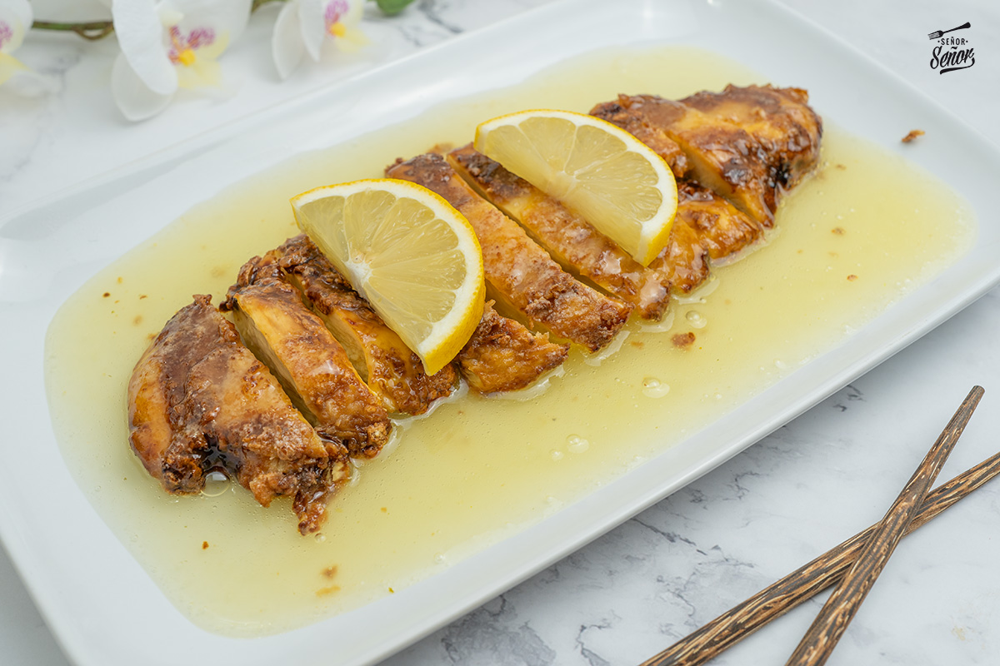
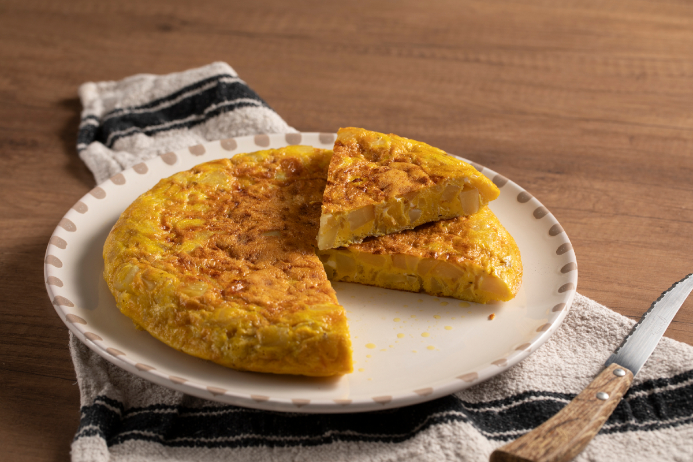
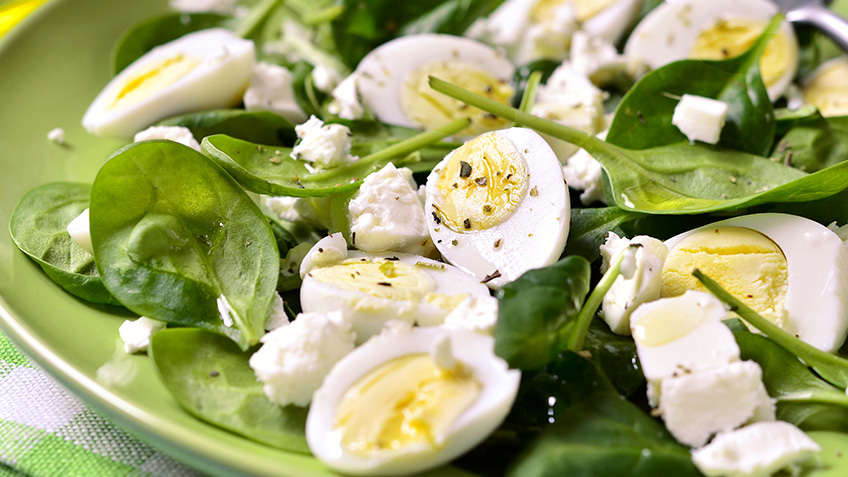

POLLO AL LIMÓN CON ARROZ
Historia del Pollo al Limón con Arroz
El pollo al limón es una preparación presente en numerosas tradiciones culinarias del mundo, desde la cocina mediterránea hasta la asiática, donde el limón se utiliza tanto para marinar como para realzar el sabor de las carnes blancas. Su sencillez lo convirtió en un favorito de la cocina cotidiana. En la versión casera argentina, se combina con arroz blanco como acompañamiento clásico, formando un plato completo, equilibrado y fácil de preparar. El jugo de limón aporta frescura y ayuda a tiernizar la pechuga, logrando una carne jugosa con muy pocos ingredientes.
Ingredientes (2 porciones)
| Ingrediente | Cantidad |
|---|---|
| Pechuga de pollo | 2 unidades |
| Arroz | 1 taza |
| Limón | 1 unidad |
| Aceite | 1 cucharada |
| Sal | A gusto |
| Pimienta | A gusto |
Paso a paso
- Cocinar el arroz en una olla con agua y sal según las indicaciones del paquete.
- Cortar las pechugas en filetes finos.
- Condimentar el pollo con sal, pimienta y jugo de limón por ambos lados.
- Calentar el aceite en una sartén y cocinar el pollo durante 5 a 7 minutos por lado, hasta que esté dorado y bien cocido.
- Servir el pollo acompañado del arroz caliente.

TORTILLA
Historia de la Tortilla
La tortilla de papas es uno de los platos más emblemáticos de la cocina española, con origen documentado en el siglo XIX en la región de Navarra o Extremadura, según distintas versiones históricas. Llegó a Argentina de la mano de la inmigración española y se integró naturalmente a la cocina casera local. En los hogares argentinos se convirtió en una opción práctica y económica, presente tanto en almuerzos como en cenas o viandas. Su base de papas, huevos y cebolla la hace accesible y versátil, pudiendo incorporarse distintos ingredientes según el gusto de cada familia.
Ingredientes (2 porciones)
| Ingrediente | Cantidad |
|---|---|
| Papas | 3 unidades |
| Huevos | 4 unidades |
| Cebolla | 1 unidad |
| Aceite | 2 cucharadas |
| Sal | A gusto |
Paso a paso
- Pelar y cortar las papas en rodajas finas. Cortar la cebolla en trozos pequeños.
- Calentar el aceite en una sartén y cocinar las papas y la cebolla a fuego medio hasta que estén tiernas.
- Batir los huevos en un recipiente y agregar sal a gusto.
- Mezclar las papas y la cebolla con los huevos batidos hasta integrar bien.
- Volcar la mezcla en la sartén y cocinar a fuego bajo hasta que esté firme por abajo.
- Dar vuelta la tortilla con ayuda de un plato y cocinar del otro lado hasta que esté lista.

ENSALADA DE HUEVO Y QUESO
Historia de la Ensalada de Huevo y Queso
Las ensaladas compuestas con huevo duro tienen una larga tradición en la cocina europea y americana, donde combinar proteínas con vegetales frescos era una forma práctica de obtener un plato nutritivo y completo sin necesidad de cocción elaborada. En la cocina casera argentina, la ensalada de huevo y queso se consolidó como una opción liviana y rápida, ideal para los meses de calor o como entrada. La combinación de queso fresco, lechuga y tomate aporta frescura, mientras que el huevo duro y el aceite de oliva le dan cuerpo y sabor al plato.
Ingredientes (2 porciones)
| Ingrediente | Cantidad |
|---|---|
| Huevos | 3 unidades |
| Queso fresco | 150 g |
| Lechuga | 1 planta pequeña |
| Tomate | 2 unidades |
| Aceite de oliva | 1 cucharada |
| Sal | A gusto |
Paso a paso
- Hervir los huevos durante 10 minutos, dejarlos enfriar, pelarlos y cortarlos en rodajas.
- Lavar y cortar la lechuga en trozos y los tomates en rodajas o cubos.
- Cortar el queso fresco en cubos pequeños.
- Reunir todos los ingredientes en una ensaladera y mezclar con cuidado.
- Condimentar con aceite de oliva y sal a gusto, mezclar y servir frío.